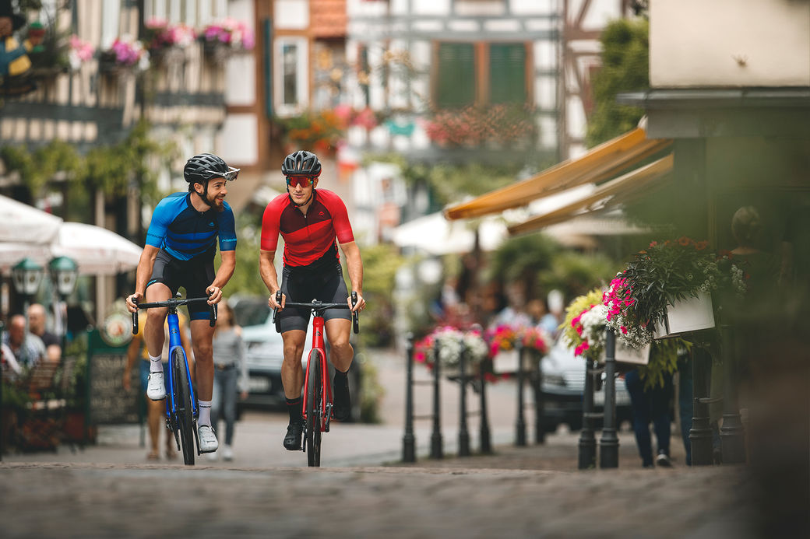

It doesn't always have to be flat out speed or outstanding climbing ability; for most road riders, it is the journey that counts, the ability to pedal for hours without discomfort and to enjoy the scenery that unfolds ahead. For those moments, the SCULTURA ENDURANCE delivers perfect comfort, outstanding climbing prowess and incredible control.
